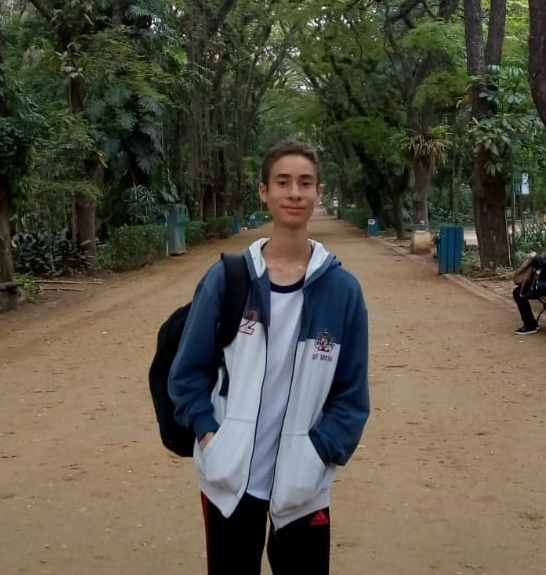
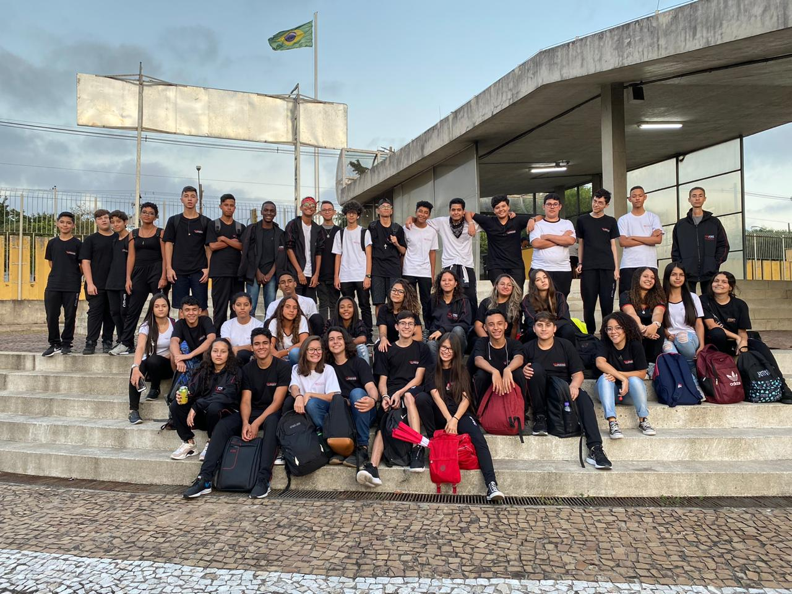

O começo
Desde de pequeno eu tenho interesse em TI, então quando eu tinha 12 anos meu pai me deu o livro "Introdução ao hardware & Manuteção de computadores". Depois de ler esse livro, eu quis me aprofundar nessa area, por meio de videos, livros e cursos. Tanto que pouco tempo depois eu já fazia manutenção de computadores e notebooks, ganhando uma pequena renda, e até já montei um PC personalizado para um fotógrafo.
Meu interesse por programação começou depois de eu ter feito um Curso de Lógica de Programação e após isso, aos 13 anos, quando eu estava no 8º ano, eu entrei para um projeto de robotica que havia na escola. Mas eu não imaginava como esse projeto me impactaria de forma tão boa.
Minha paixão
No final do 8º ano eu entrei em um projeto de robótica que havia na minha escola, e o professor Paulo, que é um professor nota 10 e também uma pessoa muito gente boa,
cuidava desse projeto.
Aprender IOT junto com aquelas pessoas tão legais que gostavam das mesmas coisas que eu era muito bom! Principalmente quando iamos a eventos(como a JAM, por exemplo). Fizemos vários projetos interessantes como um irrigador automatico por exemplo, Eram bons tempos... Essas experiencias abriram muito a minha mente e também me fizeram decidir que era essa area que eu queria seguir.

Nos dias de hoje
Depois de terminar o 9ºano, tive que decidir para qual escola eu iria, e o que faria para me tornar um programador. A solução foi tentar entrar em uma etec, pois o cursos de desenvolvimento de sistemas era junto com o próprio ensino médio, e isso pouparia muito tempo de minha vida.
E após conseguir entrar na etec, sigo aprendendo Python em paralelo junto com as próprias matéria na escola de desenvolvimento de sistemas
Este foi meu caminho para me tornar um programador.